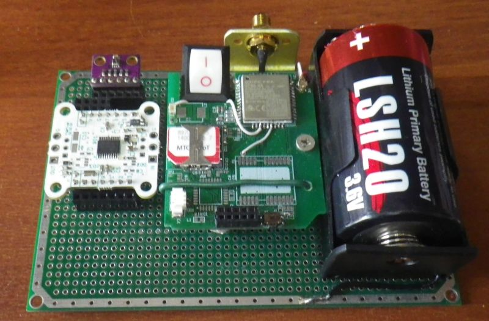

Prototype photo.
STM32L031 microcontroller.
Microcontroller pcb.
Data transfer is made via NB-IOT modem BC66.
Weather data sensor - module with BME280.
Power.
Power source - Li-SOCl2 battery of standard size D of spiral type. This type of battery can deliver high current even at very low temperatures, for example, for LSH20 SAFT, the lower operating temperature limit is -60 degrees Celsius. The cellular module is powered directly from the battery, and the MCU is powered by a voltage regulator chip TPS79718 with an output voltage of 1.8 volts.
Circuit diagram.
Components.
| MCU | STM32L031F6P6 (ST Microelectronics) |
| NB-IOT module | BC66NADA-04-STD (Quectel) |
| Sensor | BME280 (Bosch) |
| LDO | TPS79718DCKT (TI) |
| Battery | ER34615M EEMB or ER34615M FANSO or LSH20 ED-Battery or LSH20 SAFT |
Program.
To reduce power consumption, the STM32L031F6P6 is in STOP mode most of the time, and the BC66 module is turned off. The MCU is brought out of the STOP mode by the RTC timer. After waking up, the microcontroller triggers the BME280 for measurement once. Then the program turns on the BC66 and waits for it to register in the NB-IoT network. If registration on the network was successful, a connection to the server is made and data is sent. In addition to temperature, pressure and humidity, battery voltage and network signal strength are also sent to the server. After sending the data, the server is disconnected, the BC66 is turned off and the microcontroller is put into STOP mode. The PSM and eDRX modes of the BC66 module are not used, maybe they will be implemented in future versions of the program.
The code for STM32L031F6P6 is written in STM32CubeIDE using only the CMSIS library (HAL is not used). When checking, it turned out that the LPUART1 interrupt did not work. It worked after replacing the startup_stm32l031f6px.s file with a similar one from the project generated for HAL.
To test operation at low temperatures, I placed the device in the freezer of the refrigerator (the antenna is outside):